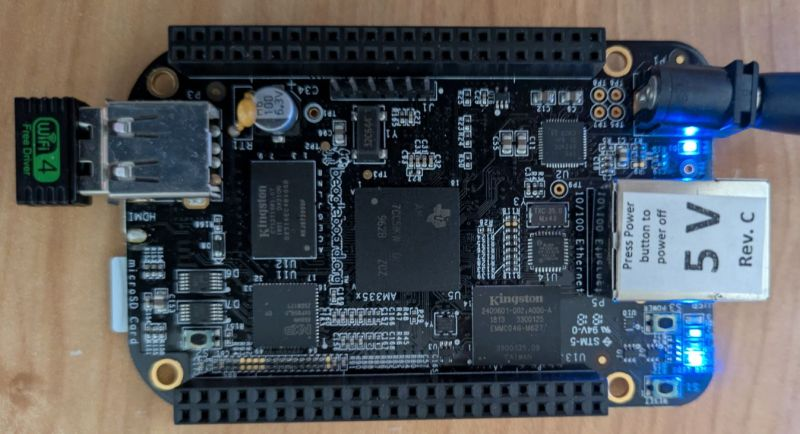

Wi-Fi on BeagleBone Black: how to make the Realtek RTL8188GU dongle work
When I connected the USB Wifi dongle based on Realtek RTL8188GU chip into my Beaglebone Black (BBB) Rev. C running Debian 12 (Linux BeagleBone 6.15.7-bone21) the device was recognized via lsusb but it didn’t work. Here I share the steps I did to make it work. This might also work to Raspberry Pi and others single-board computers.
Just for reference, below is the photo of the dongle that I have attached to the BBB.

Before start, there are a couple of things you should to know:
- My BBB is totally headless, no GUI at all only terminal.
- I used the image BeagleBone Black Debian 12.11 2025-06-30 IoT-VSCode.
- My BBB was connected to my main PC (running Windows 11) via USB cable. So I could access it via SSH.
- I set my Win 11 to share the internet connection with the BBB. So when I need to download anything I could do it directly from the BBB.
Step 1 – Identify the dongle with lsusb
This is an important step. We need to know that is there and if the Kernel have identified it:
$ lsusb
Bus 001 Device 003: ID 0bda:b711 Realtek Semiconductor Corp. RTL8188GU 802.11n WLAN Adapter (After Modeswitch)
...This confirms that indeed I have a RTL8188GU (ID 0bda:b711).
Step 2 – Mapping the driver used
If the Kernel identified it, it might have tried to load a driver. To check that I run dmesg | grep firmware which gave me the following output:
debian@BeagleBone:~$ dmesg | grep firmware
[ 19.272516] systemd[1]: systemd-pcrmachine.service - TPM2 PCR Machine ID Measurement was skipped because of an unmet condition check (ConditionPathExists=/sys/firmware/efi/efivars/StubPcrKernelImage-4a67b082-0a4c-41cf-b6c7-440b29bb8c4f).
[ 35.452599] remoteproc remoteproc0: Booting fw image am335x-pm-firmware.elf, size 217148
[ 236.783513] usb 1-1: rtl8xxxu: Loading firmware rtlwifi/rtl8710bufw_SMIC.bin
[ 236.801215] usb 1-1: Direct firmware load for rtlwifi/rtl8710bufw_SMIC.bin failed with error -2
[ 236.810099] usb 1-1: request_firmware(rtlwifi/rtl8710bufw_SMIC.bin) failed
[ 236.819474] usb 1-1: Fatal - failed to load firmwareThe most important part are these three lines:
[ 236.783513] usb 1-1: rtl8xxxu: Loading firmware rtlwifi/rtl8710bufw_SMIC.bin
[ 236.801215] usb 1-1: Direct firmware load for rtlwifi/rtl8710bufw_SMIC.bin failed with error -2
[ 236.810099] usb 1-1: request_firmware(rtlwifi/rtl8710bufw_SMIC.bin) failedThey informed that the Kernel has the driver rtl8xxxu that tried, and failed, to load the corresponding firmware rtl8710bufw_SMIC.bin. The file rtl8710bufw_SMIC.bin is specified in the Linux Kernel.
One could argue and say that I have the RTL8188GU but the kernel is loading the firmware for RTL8710BU. This is because Realtek use many chips with similar names and a generic driver (rtl8xxxu) that is suppose to server the many models. The exact correspondence one can know by checking the driver source-code or messages from dmesg, as I did.
Note that your dmesg timestamps (these things at the beginning of each line[ 236.810099]) may differ depending on when the dongle is initialized.
Coming back to the firmware file (rtl8710bufw_SMIC.bin), I confirmed that I didn’t have it with ls -l /lib/firmware/rtlwifi:
debian@BeagleBone:~$ ls -l /lib/firmware/rtlwifi
total 1040
-rw-r--r-- 1 root root 11216 May 1 2023 rtl8188efw.bin
-rw-r--r-- 1 root root 13904 May 1 2023 rtl8188eufw.bin
-rw-r--r-- 1 root root 16192 May 1 2023 rtl8192cfw.bin
-rw-r--r-- 1 root root 14818 May 1 2023 rtl8192cfwU.bin
-rw-r--r-- 1 root root 16332 May 1 2023 rtl8192cfwU_B.bin
-rw-r--r-- 1 root root 16014 May 1 2023 rtl8192cufw.bin
-rw-r--r-- 1 root root 16126 May 1 2023 rtl8192cufw_A.bin
-rw-r--r-- 1 root root 16096 May 1 2023 rtl8192cufw_B.bin
-rw-r--r-- 1 root root 16126 May 1 2023 rtl8192cufw_TMSC.bin
-rw-r--r-- 1 root root 31376 May 1 2023 rtl8192defw.bin
lrwxrwxrwx 1 root root 17 May 1 2023 rtl8192eefw.bin -> rtl8192eu_nic.bin
-rw-r--r-- 1 root root 25264 May 1 2023 rtl8192eu_ap_wowlan.bin
-rw-r--r-- 1 root root 32286 May 1 2023 rtl8192eu_nic.bin
-rw-r--r-- 1 root root 29008 May 1 2023 rtl8192eu_wowlan.bin
-rw-r--r-- 1 root root 80208 May 1 2023 rtl8192sefw.bin
-rw-r--r-- 1 root root 122328 May 1 2023 rtl8712u.bin
-rw-r--r-- 1 root root 22172 May 1 2023 rtl8723aufw_A.bin
-rw-r--r-- 1 root root 24118 May 1 2023 rtl8723aufw_B.bin
-rw-r--r-- 1 root root 19200 May 1 2023 rtl8723aufw_B_NoBT.bin
-rw-r--r-- 1 root root 30746 May 1 2023 rtl8723befw.bin
-rw-r--r-- 1 root root 31762 May 1 2023 rtl8723befw_36.bin
lrwxrwxrwx 1 root root 23 May 1 2023 rtl8723bs_ap_wowlan.bin -> rtl8723bu_ap_wowlan.bin
-rw-r--r-- 1 root root 9120 May 1 2023 rtl8723bs_bt.bin
lrwxrwxrwx 1 root root 17 May 1 2023 rtl8723bs_nic.bin -> rtl8723bu_nic.bin
lrwxrwxrwx 1 root root 20 May 1 2023 rtl8723bs_wowlan.bin -> rtl8723bu_wowlan.bin
-rw-r--r-- 1 root root 20886 May 1 2023 rtl8723bu_ap_wowlan.bin
-rw-r--r-- 1 root root 32108 May 1 2023 rtl8723bu_nic.bin
-rw-r--r-- 1 root root 26398 May 1 2023 rtl8723bu_wowlan.bin
-rw-r--r-- 1 root root 27726 May 1 2023 rtl8723defw.bin
-rw-r--r-- 1 root root 11662 May 1 2023 rtl8723fw.bin
-rw-r--r-- 1 root root 22996 May 1 2023 rtl8723fw_B.bin
-rw-r--r-- 1 root root 27516 May 1 2023 rtl8812aefw.bin
-rw-r--r-- 1 root root 21204 May 1 2023 rtl8812aefw_wowlan.bin
-rw-r--r-- 1 root root 28984 May 1 2023 rtl8821aefw.bin
-rw-r--r-- 1 root root 28348 May 1 2023 rtl8821aefw_29.bin
-rw-r--r-- 1 root root 19858 May 1 2023 rtl8821aefw_wowlan.bin
-rw-r--r-- 1 root root 127496 May 1 2023 rtl8822befw.binIn Debian-based distributions (Ubuntu, Mint, etc.) there is a package called
firmware-realtekwith some Realtek proprietary firmwares. However, it doesn’t have the firmwarertl8710bufw_SMIC.binI needed. One can check what is included in the package here.
The conclusion from this step is that I needed the file rtl8710bufw_SMIC.bin.
Step 3 – Installing the missing firmware
Searching on the internet I found a GitHub repo with the file. So I downloaded it to the folder /lib/firmware/rtlwifi:
$ cd /lib/firmware/rtlwifi
$ sudo wget https://github.com/Malik24626/RTL8188GU/tree/main/rtl8710bufw_SMIC.bin?raw=true -O rtl8710bufw_SMIC.binMake sure that you added the ?raw=true after the filename otherwise wget will download a html page. If in doubt, open the link in a browser to verify it downloads the binary and not HTML.
Later if found this FTP server with many others firmware available.
Next, you reboot:
$ sudo rebootStep 4 – Checking if it is working
After the reboot, I checked with dmesg:
debian@BeagleBone:~$ dmesg | grep firmware
...
[ 47.365423] usb 1-1: rtl8xxxu: Loading firmware rtlwifi/rtl8710bufw_SMIC.bin
...Among other lines I saw that the firmware was loaded without errors!
So I checked if there is a wlan interface:
debian@BeagleBone:~$ iw dev
phy#0
Interface wlan0
ifindex 33
wdev 0x1d
addr 90:de:80:bc:ab:d1
ssid altair4
type managed
channel 1 (2412 MHz), width: 20 MHz, center1: 2412 MHz
txpower 30.00 dBm
multicast TXQ:
qsz-byt qsz-pkt flows drops marks overlmt hashcol tx-bytes tx-packets
0 0 0 0 0 0 0 0 0After setting up wpa_supplicant to connect to my local wifi, I checked if the wlan0 was getting an IP address:
debian@BeagleBone:~$ ifconfig
...
wlan0: flags=4163<UP,BROADCAST,RUNNING,MULTICAST> mtu 1500
inet 10.0.0.38 netmask 255.255.255.0 broadcast 10.0.0.255
inet6 2604:3d09:37d:73e0::e9d5 prefixlen 128 scopeid 0x0<global>
inet6 fe80::92de:80ff:febc:abd1 prefixlen 64 scopeid 0x20<link>
inet6 2604:3d09:37d:73e0:92de:80ff:febc:abd1 prefixlen 64 scopeid 0x0<global>
ether 90:de:80:bc:ab:d1 txqueuelen 1000 (Ethernet)
RX packets 42572 bytes 10449360 (9.9 MiB)
RX errors 0 dropped 0 overruns 0 frame 0
TX packets 44733 bytes 26019255 (24.8 MiB)
TX errors 0 dropped 0 overruns 0 carrier 0 collisions 0Everything seemed to be in place, so I rebooted the BB a couple of times just to check that driver-firmware were working. By the way, I was still connect to my main computer through USB cable.
Step 5 - Final steps
I shutdown the BBB and disconnected the USB. Now I powered it on and tried to connect to it through SSH using the IP adress that wlan0 got, 10.0.0.38 in my case.
If you see a prompt asking for the password, it means your BBB is online using the wifi dongle. For sanity check try ping:
debian@BeagleBone:~$ ping -c 4 8.8.8.8
PING 8.8.8.8 (8.8.8.8) 56(84) bytes of data.
64 bytes from 8.8.8.8: icmp_seq=1 ttl=119 time=30.5 ms
64 bytes from 8.8.8.8: icmp_seq=2 ttl=119 time=38.6 ms
64 bytes from 8.8.8.8: icmp_seq=3 ttl=119 time=41.3 ms
64 bytes from 8.8.8.8: icmp_seq=4 ttl=119 time=64.9 ms
--- 8.8.8.8 ping statistics ---
4 packets transmitted, 4 received, 0% packet loss, time 3006ms
rtt min/avg/max/mdev = 30.500/43.815/64.882/12.794 ms0% packet loss, this is what we wanted to see!
That is it, now the wifi dongle is working properly!
Final Considerations
- The driver
rtl8xxxuis in the Kernel, but the firmware was not included. - Not all the firmwares are available but default, to keep a lean distribution or because it is a proprietary software.
- Always check
lsusbanddmesgif the dongle doesn’t work properly.
What I didn’t include here was how to set up wpa_supplicant and manually get an IP address with dhclient.
Cheers!